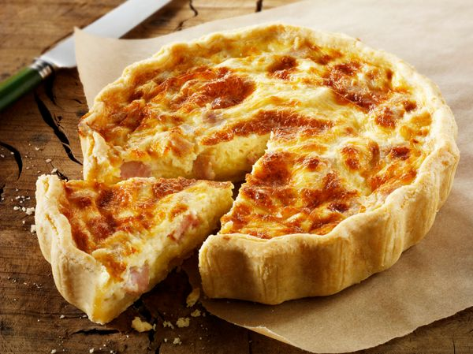

Quiche lorraine

Description
Une délicieuse spécialité française venue de l'Est. S'accompagne parfaitement d'une bière allemande.
Ingredients
- 200g de pâte brisée
- 3 oeufs
- 20cl de lait
- 200g de lardons
- 30g de beurre
- 20cl de crème fraîche
- muscade
- sel
- poivre
Steps
- Préchauffer le four à 180°C (thermostat 6).
- Etaler la pâte dans un moule, la piquer à la fourchette. Parsemer de copeaux de beurre.
- Faire rissoler les lardons à la poêle puis les éponger avec une feuille d'essuie-tout.
- Battre les oeufs, la crème fraîche et le lait.
- Ajouter les lardons.
- Assaisonner de sel, de poivre et de muscade.
- Verser sur la pâte.
- Cuire 45 à 50 min.
- Déguster